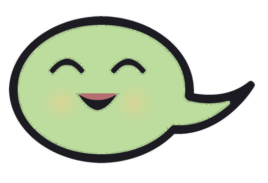
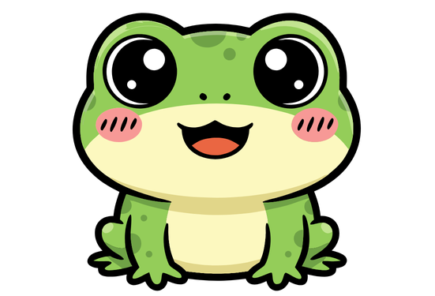

Cookigotchi
Le guide de la mare
Tout ce qu'il faut savoir pour chouchouter ta grenouille.
1 Mets le jeu sur ton téléphone
- Ouvre le lien du jeu dans Chrome.
- Touche les trois petits points ⋮ en haut à droite.
- Choisis « Ajouter à l'écran d'accueil » (ou « Installer l'application »).
L'appli Cookigotchi apparaît avec tes autres applis. Elle marche même sans internet.
2 Ton œuf
Au début, il y a juste un œuf sur un nénuphar. Tapote-le pour l'aider à éclore : plus tu tapotes, plus il éclot vite !
Quand il éclot, c'est toi qui choisis le prénom de ton têtard. Pas d'idée ? Touche « Autre idée ».
3 Les 4 jauges
En haut de l'écran, 4 jauges te disent comment va ta grenouille. Plus elles sont pleines, mieux elle se sent.
Amour : elle a besoin de câlins.
Faim : son ventre gargouille.
Énergie : elle est pleine de pep's ou fatiguée.
Propreté : toute propre, ou il faut un bain.
Quand ta grenouille a besoin de quelque chose, une bulle apparaît au-dessus de sa tête avec l'icône du besoin. Facile !
4 Les boutons
Câlin : un gros câlin qui remplit l'amour. Tu peux aussi toucher ta grenouille directement !
Miam : un cookie. Si elle n'a plus faim, elle dit non !
Jeu : choisis un mini-jeu. Jouer la rend heureuse… et un peu fatiguée.
Dodo : une petite sieste quand elle est fatiguée. Touche encore pour la réveiller.
Bain : plouf ! Elle redevient toute propre.
Nounou : met tout en pause (explications juste en dessous).
5 Le mode Nounou
Tu pars à l'école ou chez une copine ? Active Nounou (la petite maison) : le temps s'arrête pour ta grenouille, et elle ne s'ennuie pas.
Quand tu reviens, touche n'importe quel bouton et elle se réveille, toute contente de te voir.
Pendant l'école (en semaine, de 8h15 à 16h30, et le mercredi jusqu'à midi), la mare se met en pause toute seule : ta grenouille ne réclame rien pendant que tu es en classe.
Pas école aujourd'hui ? (congé, jour férié, malade…) Touche Ombeline et choisis « Pas d'école aujourd'hui ». Pour les vacances, va dans les réglages (la roue dentée) et coupe « École auto ».
6 Toute propre
Petit à petit, ta grenouille se salit (c'est une grenouille, après tout). Quand la jauge bleue baisse, donne-lui un bain : plouf, et elle redevient toute propre.
7 Le jour et la nuit
Ta grenouille vit en même temps que toi. Le soir, à partir de 20h, elle s'endort toute seule sous les étoiles, et elle se réveille à 7h.
Pendant la nuit, chut… Elle se repose et ses jauges baissent beaucoup moins vite. Tu la retrouves le matin en pleine forme.
8 Les mini-jeux
Gobe-mouches : touche un insecte, et hop, ta grenouille tire la langue ! Mouche +1, luciole +3, libellule +5. Enchaîne les prises pour des combos ×2, ×3, ×4. Mais attention aux guêpes jaunes et noires : −3 et la tête qui tourne !
Chanson des bulles : les bulles s'allument en musique. Retiens l'ordre et rejoue-le. Chaque manche ajoute une note… jusqu'où iras-tu ?
Cache-cache : un petit têtard se cache sous une feuille, puis les feuilles se mélangent. Suis-la des yeux et trouve-le !
Chaque jeu garde ton record. Essaie d'avoir les 3 étoiles au Gobe-mouches !
9 Ta grenouille grandit
Elle grandit pour de vrai, jour après jour. La petite barre verte en haut montre quand elle va changer.


10 L'amour et la famille
Quand ta grenouille est adulte (au bout de 10 jours) et heureuse, un jour, une autre grenouille vient lui rendre visite, avec un cœur au-dessus de la tête. Touche-la : coup de cœur !
Un peu plus tard, un œuf apparaît sur la mare. Quand tu es prête, touche-le : les parents partent vivre à la Grande Mare, et c'est toi qui t'occupes de leur bébé. Il aura un mélange de leurs couleurs !
Touche le bouton aux deux cœurs (en haut) pour voir l'album de ta famille de grenouilles.
☾ Ombeline et le sourire
Sur la berge, il y a Ombeline, la gardienne de la mare. Elle ne sourit jamais. Enfin… presque jamais. Touche-la : elle a toujours quelque chose à dire.
Au début, la mare est grise et ta grenouille reste impassible. Mais à chaque câlin, chaque cookie, chaque partie, elle sourit un peu plus — et Ombeline aussi. Petit à petit, les roses rougissent, le soleil perce la brume… Et si tu vas jusqu'au bout, il paraît qu'un arc-en-ciel apparaît.
🪙 Les pièces et la boutique
Tu gagnes des pièces en jouant aux mini-jeux, en finissant tes quêtes du jour, en débloquant des succès… et juste en venant voir ta grenouille chaque jour.
Touche tes pièces (en haut de l'écran) pour ouvrir la boutique d'Ombeline : des chapeaux pour ta grenouille et des décorations pour la mare. Quand tu as assez de pièces pour un achat, le compteur se met à briller.
Le livre violet à côté, c'est ton grimoire : tes quêtes, tes succès et ta famille.
Un code secret de papa ? Touche la roue dentée en haut à droite, puis « Code secret », et tape le mot qu'il t'a donné. Surprise garantie.
★ Le secret de la grenouille dorée
Si tu prends très bien soin de ta grenouille adulte, au bout de 2 semaines, elle peut devenir… dorée, avec une petite couronne. Chut, c'est un secret.
? Et si j'oublie ?
Pas de panique : ta grenouille ne meurt jamais. Si tu l'oublies un peu, elle devient boudeuse ou toute sèche et grise. Quelques câlins, un bain et un cookie, et elle redevient toute belle.
Voilà, tu sais tout ! Amuse-toi bien à la mare.